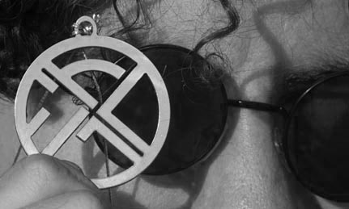

 |
MANO FOJE |
Šis skyrelis yra skirtas išreikšti jūsų asmeniniam ryšiui su FOJE. Tai vieta, kur laukiami pasakojimai apie tai, kaip klausėtės gaudžiančių gitarų, kaip mėlynais plaukais bėgote gaudyti drugelių, arba kaip lipote ant stogo ir sėdėjot žvakių šviesoje, kur žvaigždės kartais krenta. Parodykite savo išskustus smilkinius, naktimis siūtas vėliavas ar Joniškyje po koncerto nukosėtus plakatus. Dėkite čia tai, dėl ko kažkas suvirpa viduje, išgirdus žodį FOJE. Iš esmės, tai skyrelis kaip AŠ JĄ LABAI.
P.S. Kadangi kol kas informacija išsimėčiusi ir padrika, siųskite savo mintis elektroniniu paštu, o vėliau atrinksime tai, kas gražiausia. Pradžiai kelios fanų mintys:
Skristė: Laikau "Foje" kompaktus tam, kad kartais galėčiau persikelti per laiko upę į savo spuoguotą, naivią ir lietuviškai melancholišką paauglystę, kurioje atšalusi arbata, mėlyni plaukai ir kibernetiniai žaislai yra neatskiriama mano pasaulio dalis
Violeta Grigaliūnaitė: Vilnius. Vingio parkas. Kokie 1993 ar 1994. Koncertas. Nuo 19 valandos groja įvairios grupės. Lyja kaip iš kibiro. 21 valanda. Scenoje pasirodo "Foje" ir lietus liaujasi.
Saulius Juozaitis: Mes visi kartu augome su "Foje" ir ji buvo viskas: ir mama, ir tėtis, ir mokykla...
Sigita Gridziuškaitė: Atsimenu tą savaitgalį prie Elektrėnų ežero, kur sutikome Jus apmėtydami konkorėžiais, po to sėdėjom prie laužo valgydami gardžius, "tik" porą valandų ant laužo virusius makaronus, o po to kalbėjomės beveik apie viską...
Anze: "Foje" savo laiku buvo mano gyvenimo ritmas tik jie, tik apie juos ir tik su jais. Ėjau iš proto paauglė, einu ir dabar būdama trejų metų sūnelio mama ir nesvarbu, ar tai laiko apmėtyta daina, ar ką tik Andriaus iškepta. Svarbu, kad balsas toks artimas ir sieloje užsidega laužai. Ačiū Jums.
Dalia: Pirmą kartą apie "Foje" sužinojau, draugei paskambinus (net neatsimenu kuriais metais, kažkur prieš 100 metų). Sako, kažkokia grupė atsirado Lietuvoj. Kai per telefoną paklausiau "visos svajonės lieka kažkur praeity...", supratau GENIJUS gimė. Tiesiog nebuvau girdėjus nieko kito nuostabesnio.
Justinas Dementavičius: "Foje" - jaunystės liga... Palaiminti sirgę, palaiminti bent akimirką skendę muzikos ir žodžių sraute, užlieti tikėjimo ir kančios, skausmo ir vilties gyvenimo... "Foje" įsiliejo į gyvenimą, gyvenimas įsiliejo į "Foje" ir aš jaučiu: tai tapo, tai tampa, tai taps istorija... Tiesiog "Foje" įėjimas į amžinybę... Ačiū.
Simonas Kareiva: Iš tikrųjų: klausaisi radijo, jis tave hipnotizuoja, užliūliuoja, ir staiga išgirsti pažįstamą ritmą, o tada iškeli rankas į dangų ir tikrai, jautiesi kaip pačiame pasaulio viduryje, ir po kelių minučių nurimęs svajingai susimąstai. Tavo sielos svečių knygoje švelniu braižu pasirašo: "Čia buvo "Foje"... "
Rūta Bučinskaitė: Pažadinot manyje svajones, pažadinot mintis, pažadinot jėgas ir norus... Verkiau. Bet ne per koncertą, ne tada, kai pasirašinėjote klykiančiam merginų pulkui. Verkiau, kai niekas nematė... Kai būna blogai, kai pykstu, kai jaučiuosi suknistai kartoju sau kelias Jūsų dainų frazes. Man niekada nebus per daug meilės ir kai užsimanau keisti pasaulį, pradedu nuo savęs... Taip, taip! Būtent taip ir elgiuosi. Net nežinau blogai ar gerai, kad išsiskyrėte? kartais klausiu savęs: jei būtų išlikusi grupė "Foje", tai kam dabar aš jausčiau tokią tyrą nostalgiją? Kai mano vaikai bus septyniolikos ir radijas kartu mums virtuvėje pietaujant užgros Jūsų dainą, aš sakysiu: "O mūsų laikais..." ir tada pasakosiu apie "Foje". Taip kaip mano tėvai pasakoja apie "The Beatles" ar Elvį... Sako jie pakeitė pasaulį. Visai kaip ir Jūs...
Kristina Konošovaitė: "Foje" geriausia, ką mes galėjome išgirsti, patirti, pajausti. "Foje" sapnas, kurį reikia iššifruoti, kad būtum laimingas.
Loreta Vaitaitienė: Mirusi "Foje" yra gyvesnė už daugelį gyvųjų.
Tomas Šapalas: "Foje" muzika yra vienatvės draugė. Su ja nesijauti vienišas, ji padeda išgyventi sunkias akimirkas. "Foje" dainų tekstai gyvenimo veidrodis. Visus dainų žodžius gali pritaikyti sau, juose daug tiesos...
Ingrida Vaitiekienė: Man "Foje" muzika tai paauglystė, visos su tuo susijusios problemos ir džiaugsmai; tai mano meilė, santuoka ir sūnus, vaikišku balsu dainuojantis tas pačias dainas, kaip ir aš kažkada... Tai etapas, kuris mano gyvenime niekada nesibaigs.
Irma Vosyliūtė: Visada prisiminsiu iš vaikystės vieną laidą vaikams. Ten jaunasis A.Mamontovas davė interviu. Vieni žodžiai ypatingai įstrigo atmintin: "Svarbiausia kilti po truputį aukštyn taip pasieksi savo tikslą, o kas greitai pakyla, tas greit ir nukrenta..."
Artūras Paleičikas: Kai buvau mažas, kartu su "Foje" gyvenau, kartu maniau, kad tyla skamba garse, kad tamsa žiba šviesoje... Gailiuosi tik vieno: nebebus tų laikų, kai buvom brolis broliui visi, kai buvom bendri ne išore, ne kokiom banalybėm, o vidumi sielose turėjom ugnį, kuri vertė ne tik pažinti save, pažinti akimirką, bet ir visada tikėti, prisiminti laikus, kai buvom vaikai, svajojom kaip vaikai... "Foje" MANO ŠVENTA VILTIS !
Sabina Krum: "Foje" tai paskutinė mano vasara Lietuvoje, paskutinės kartu praleistos akimirkos su gerais draugais. Kas kartą, kai aš prisimenu Lietuvą, asocijuoju ją su grupe. Aš jau penkeri metai, kai palikau Lietuvą ir išvažiavau į Izraelį. Per atsisveikinimo vakarėlį, pasakiau savo draugams: "Foje" jau nebėra daugiau manęs čia niekas nebelaiko". Tai žinoma buvo pasakyta juokais, bet mano širdyje liko amžinai.
Daina Stanevičiūtė-Ravinskienė: Mes labai norėjome būti panašūs į "Foje": "statėme" plaukus, vilkomės džinsus ir dainavome "Laužo šviesą"...
Eglė Vandzinskaitė (Kauno "Foje" ex-fanklubas "Mėlyni krantai"): Dabar man pačiai nebeaišku, kaip galėjome esant 25 laipsniams šalčio su dvimetrine vėliava autostopu važiuoti į jau -nioliktą "Foje" koncertą Naujojoje Akmenėje... Žinau tik, kad tai buvo vienas geriausių mano gyvenimo etapų.
Simonas Šeduikis: Foje - tai totalių pusantrų metų mano paauglystės gyvenimo ir formavimosi, ir tai nesibaigia, tai yra su manimi, vos ne visada ir visur . . .
Ugne Sinkeviciute: Foje - tai tarsi mano aukščiausios kokybės vaistas nuo visų ligų. Jų dainos užmigdo, pažadina, pralinksmina. Kiekviename žodyje randu prasmę, ir neretai randu sakinių, kuriuos galiu pritaikyti sau, bet kuriuo metu. A.Mamontovo balsas tiesiog svaigina. Nors dar nebuvau gimus tuo momentu, kai Foje buvo nerealiai populiarūs, bet atrodo, kad jie su manimi visą gyvenimą. Tiesiog gyvenu jų muzika.
Vaida Keleryte: Mintys beklausant Kitokio pasaulio:
Kvepuojam giliai ir jauciaum stipriau,
juk mes esam cia ir mums ne visvien...
Sypsokis dabar ir nenusilenk!
Juk pats likimas tai Tau paruose!
Del ko Tu gyveni?... Tik pats supranti!
Vaziuoji kelyje ir skamba sirdis!
Ziuri aplinkui vasaros naktis!
Geltona? Juoda? ir grazu!
Rapsai zydi, bet Tau ne nuo to juk saldu!
Draugas dainuoja salia, o skamba ne daina - jausmai!
Nieko nereikia, nes Tu pasaulio paslapti valdai!
Mielas zmogau, papasakok sau, ka jauti!!!
Juk seniai jau nebe vaikas esi!
Rapsu laukai nuzyti taip greit,
O tu vis dar ziuri i mane ir laime matai,
supranti - juk tai ne sapnai,
si jausma zino net mazi vaikai.
Juk sie laukai mylimi amzinai,
del to kad mes esam sios zemes vaikai,
ir kaip Tu pats vis sakai,
mes esam laimingi, nes pasaulio paslapti valdai.